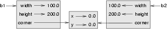

16. Classes and Objects — Digging a little deeper¶
16.1. Rectangles¶
Let’s say that we want a class to represent a rectangle which is located somewhere in the XY plane. The question is, what information do we have to provide in order to specify such a rectangle? To keep things simple, assume that the rectangle is oriented either vertically or horizontally, never at an angle.
There are a few possibilities: we could specify the center of the rectangle (two coordinates) and its size (width and height); or we could specify one of the corners and the size; or we could specify two opposing corners. A conventional choice is to specify the upper-left corner of the rectangle, and the size.
Again, we’ll define a new class, and provide it with an initializer and a string converter method:
To specify the upper-left corner, we have embedded a Point object (as we used it in the previous chapter) within our new Rectangle object! We create two new Rectangle objects, and then print them producing:
box: ((0, 0), 100, 200) bomb: ((100, 80), 5, 10)
The dot operator composes. The expression box.corner.x means, “Go to the object that box refers to and select its attribute named corner, then go to that object and select its attribute named x”.
The figure shows the state of this object:

16.2. Objects are mutable¶
We can change the state of an object by making an assignment to one of its attributes. For example, to grow the size of a rectangle without changing its position, we could modify the values of width and height:
box.width += 50 box.height += 100
Of course, we’d probably like to provide a method to encapsulate this inside the class. We will also provide another method to move the position of the rectangle elsewhere:
Let us try this:
>>> r = Rectangle(Point(10,5), 100, 50) >>> print(r) ((10, 5), 100, 50) >>> r.grow(25, -10) >>> print(r) ((10, 5), 125, 40) >>> r.move(-10, 10) print(r) ((0, 15), 125, 40)
16.3. Sameness¶
The meaning of the word “same” seems perfectly clear until we give it some thought, and then we realize there is more to it than we initially expected.
For example, if we say, “Alice and Bob have the same car”, we mean that her car and his are the same make and model, but that they are two different cars. If we say, “Alice and Bob have the same mother”, we mean that her mother and his are the same person.
When we talk about objects, there is a similar ambiguity. For example, if two Points are the same, does that mean they contain the same data (coordinates) or that they are actually the same object?
We’ve already seen the is operator in the chapter on lists, where we talked about aliases: it allows us to find out if two references refer to the same object:
>>> p1 = Point(3, 4) >>> p2 = Point(3, 4) >>> p1 is p2 False
Even though p1 and p2 contain the same coordinates, they are not the same object. If we assign p1 to p3, then the two variables are aliases of the same object:
>>> p3 = p1 >>> p1 is p3 True
This type of equality is called shallow equality because it compares only the references, not the contents of the objects.
To compare the contents of the objects — deep equality — we can write a function called same_coordinates:
Now if we create two different objects that contain the same data, we can use same_point to find out if they represent points with the same coordinates.
>>> p1 = Point(3, 4) >>> p2 = Point(3, 4) >>> same_coordinates(p1, p2) True
Of course, if the two variables refer to the same object, they have both shallow and deep equality.
Beware of ==
“When I use a word,” Humpty Dumpty said, in a rather scornful tone, “it means just what I choose it to mean — neither more nor less.” Alice in Wonderland
Python has a powerful feature that allows a designer of a class to decide what an operation like == or < should mean. (We’ve just shown how we can control how our own objects are converted to strings, so we’ve already made a start!) We’ll cover more detail later. But sometimes the implementors will attach shallow equality semantics, and sometimes deep equality, as shown in this little experiment:
This outputs:
== on Points returns False == on lists returns True
So we conclude that even though the two lists (or tuples, etc.) are distinct objects with different memory addresses, for lists the == operator tests for deep equality, while in the case of points it makes a shallow test.
16.4. Copying¶
Aliasing can make a program difficult to read because changes made in one place might have unexpected effects in another place. It is hard to keep track of all the variables that might refer to a given object.
Copying an object is often an alternative to aliasing. The copy module contains a function called copy that can duplicate any object:
>>> import copy >>> p1 = Point(3, 4) >>> p2 = copy.copy(p1) >>> p1 is p2 False >>> same_coordinates(p1, p2) True
Once we import the copy module, we can use the copy function to make a new Point. p1 and p2 are not the same point, but they contain the same data.
To copy a simple object like a Point, which doesn’t contain any embedded objects, copy is sufficient. This is called shallow copying.
For something like a Rectangle, which contains a reference to a Point, copy doesn’t do quite the right thing. It copies the reference to the Point object, so both the old Rectangle and the new one refer to a single Point.
If we create a box, b1, in the usual way and then make a copy, b2, using copy, the resulting state diagram looks like this:

This is almost certainly not what we want. In this case, invoking grow on one of the Rectangle objects would not affect the other, but invoking move on either would affect both! This behavior is confusing and error-prone. The shallow copy has created an alias to the Point that represents the corner.
Fortunately, the copy module contains a function named deepcopy that copies not only the object but also any embedded objects. It won’t be surprising to learn that this operation is called a deep copy.
>>> b2 = copy.deepcopy(b1)
Now b1 and b2 are completely separate objects.
16.5. Glossary¶
- deep copy
- To copy the contents of an object as well as any embedded objects, and any objects embedded in them, and so on; implemented by the deepcopy function in the copy module.
- deep equality
- Equality of values, or two references that point to objects that have the same value.
- shallow copy
- To copy the contents of an object, including any references to embedded objects; implemented by the copy function in the copy module.
- shallow equality
- Equality of references, or two references that point to the same object.
16.6. Exercises¶
Add a method area to the Rectangle class that returns the area of any instance:
r = Rectangle(Point(0, 0), 10, 5) test(r.area(), 50)
Write a perimeter method in the Rectangle class so that we can find the perimeter of any rectangle instance:
r = Rectangle(Point(0, 0), 10, 5) test(r.perimeter(), 30)
Write a flip method in the Rectangle class that swaps the width and the height of any rectangle instance:
r = Rectangle(Point(100, 50), 10, 5) test(r.width, 10) test(r.height, 5) r.flip() test(r.width, 5) test(r.height, 10)
Write a new method in the Rectangle class to test if a Point falls within the rectangle. For this exercise, assume that a rectangle at (0,0) with width 10 and height 5 has open upper bounds on the width and height, i.e. it stretches in the x direction from [0 to 10), where 0 is included but 10 is excluded, and from [0 to 5) in the y direction. So it does not contain the point (10, 2). These tests should pass:
r = Rectangle(Point(0, 0), 10, 5) test(r.contains(Point(0, 0)), True) test(r.contains(Point(3, 3)), True) test(r.contains(Point(3, 7)), False) test(r.contains(Point(3, 5)), False) test(r.contains(Point(3, 4.99999)), True) test(r.contains(Point(-3, -3)), False)
In games, we often put a rectangular “bounding box” around our sprites. (A sprite is an object that can move about in the game, as we will see shortly.) We can then do collision detection between, say, bombs and spaceships, by comparing whether their rectangles overlap anywhere.
Write a function to determine whether two rectangles collide. Hint: this might be quite a tough exercise! Think carefully about all the cases before you code.